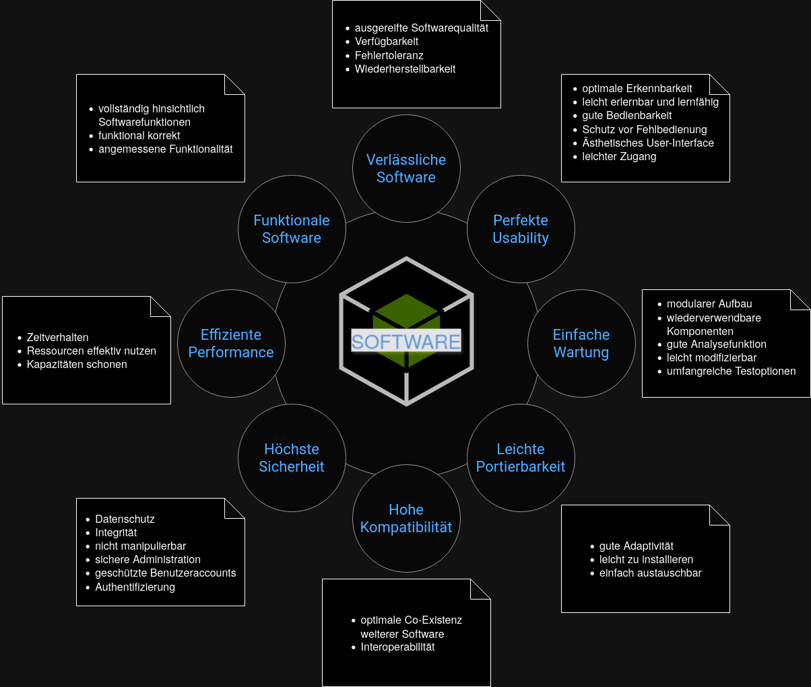

ISO (International Organization for Standardization)
Zweck: ISO ist eine unabhängige, nichtstaatliche internationale Organisation, die internationale Standards entwickelt.
Gründung: 1947
Sitz: Genf, Schweiz
Bereich: ISO deckt eine Vielzahl von Standards ab, von Technologie und Lebensmittelsicherheit bis hin zu Landwirtschaft und Gesundheitswesen.
IEC (International Electrotechnical Commission)
Zweck: IEC ist die weltweit führende Organisation, die internationale Standards für alle elektrischen, elektronischen und verwandten Technologien entwickelt.
Gründung: 1906
Sitz: Genf, Schweiz
Bereich: Elektrotechnik und Elektronik.
DIN (Deutsches Institut für Normung)
Zweck: DIN ist die nationale Normungsorganisation Deutschlands und vertritt deutsche Interessen auf internationaler und europäischer Ebene.
Gründung: 1917
Sitz: Berlin, Deutschland
Bereich: DIN entwickelt sowohl nationale als auch internationale Standards in verschiedenen Bereichen.
Kombination von ISO, IEC und DIN
Zusammenarbeit: ISO und IEC arbeiten oft zusammen, um Standards in Bereichen zu entwickeln, die sowohl technologische als auch elektrotechnische Aspekte umfassen. Wenn sie zusammenarbeiten, wird der Standard oft als "ISO/IEC" bezeichnet.
Adoption: Nationale Normungsorganisationen, wie DIN, können internationale Standards übernehmen und sie als nationale Standards veröffentlichen. Wenn DIN beispielsweise einen ISO-Standard übernimmt, könnte er als "DIN EN ISO" bezeichnet werden, wobei "EN" für "Europäische Norm" steht.
Einheitlichkeit: Die Kombination von Organisationen in einem Standardtitel zeigt, dass der Standard sowohl auf internationaler als auch auf nationaler Ebene anerkannt ist. Dies fördert die Einheitlichkeit und Akzeptanz von Standards weltweit.
ISO-Normen
ISO 9000 Familie
ISO 9000 - Qualitätsmanagementsysteme - Grundlagen und Begriffe
Definiert die Grundlagen und Begriffe für Qualitätsmanagementsysteme.
Dient als Einführung und Leitfaden für die anderen Normen der ISO 9000 Familie.
ISO 9001 - Qualitätsmanagementsysteme - Anforderungen
ISO 9001 legt die Kriterien für ein Qualitätsmanagementsystem fest.
Kann von jeder Organisation verwendet werden, unabhängig von ihrer Größe oder dem, was sie tut.
Erfordert, dass Organisationen ihre Prozesse verbessern und Kundenzufriedenheit sicherstellen.
ISO 9004 - Leitfaden zur Erzielung nachhaltigen Erfolgs durch Qualitätsmanagement
Bietet Leitlinien zur Erzielung nachhaltigen Erfolgs für jede Organisation.
Betont die Bedeutung des Engagements der Führungskräfte und die Einbindung der Geschäftsstrategie in das QMS.
ISO 9002 und ISO 9003
IT-spezifische QM-Normen
Softwareentwicklung
ISO/IEC 25010 - System- und Softwarequalität - Modelle und Metriken
ISO/IEC 25010 ersetzt ISO/IEC 9126.
Bietet ein Modell für Softwarequalität, das sowohl interne als auch externe Qualitätsmerkmale umfasst.
Hauptmerkmale: Funktionalität, Zuverlässigkeit, Benutzbarkeit, Effizienz, Wartbarkeit und Portabilität.

Systemadministration
ISO/IEC 20000 - IT-Service-Management
Legt einen Standard für das IT-Service-Management fest.
Hilft Organisationen, ihre IT-Dienstleistungen zu optimieren.